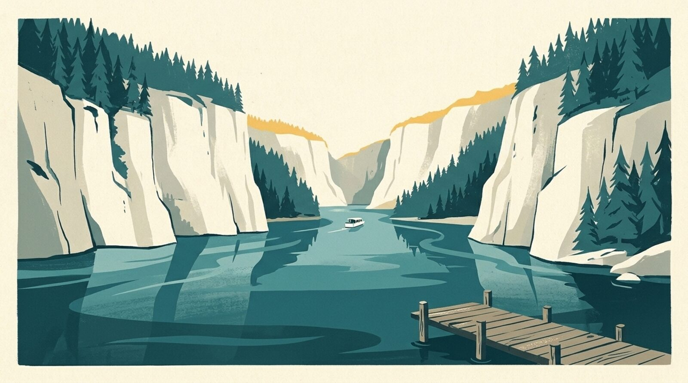
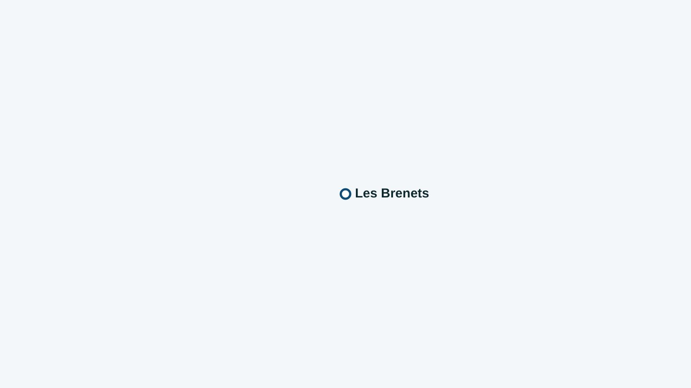

In short
My Lake follows one beach on Lac des Brenets: Les Brenets, with the water temperature 70 cm below the surface where it is calculated. Here is the list, then useful places around the water.

Lac des Brenets covers about 0.8 km² and lies at 750 m above sea level.
The beach followed on Lac des Brenets
The water is not measured here: no model calculates it yet, and the app prefers not to make up a figure.
A drink or a meal by Lac des Brenets
- Restaurant Bellevue, Les Brenets: Champ-de-la-Fontaine 1: shaded terrace seating about 60 with a view of Lac des Brenets, perch fillets and trout from its own tank.
- Bar du Port, Les Brenets: At Les Brenets port, a waterside terrace where the boats to the Saut du Doubs leave.
Lake Geneva’s water right now
Each beach’s water temperature is in the My Lake app, updated every three hours.